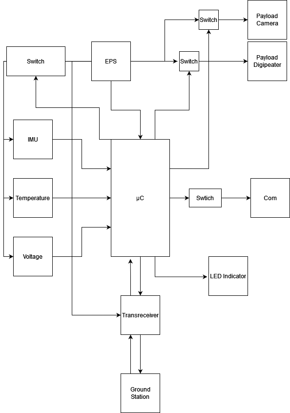
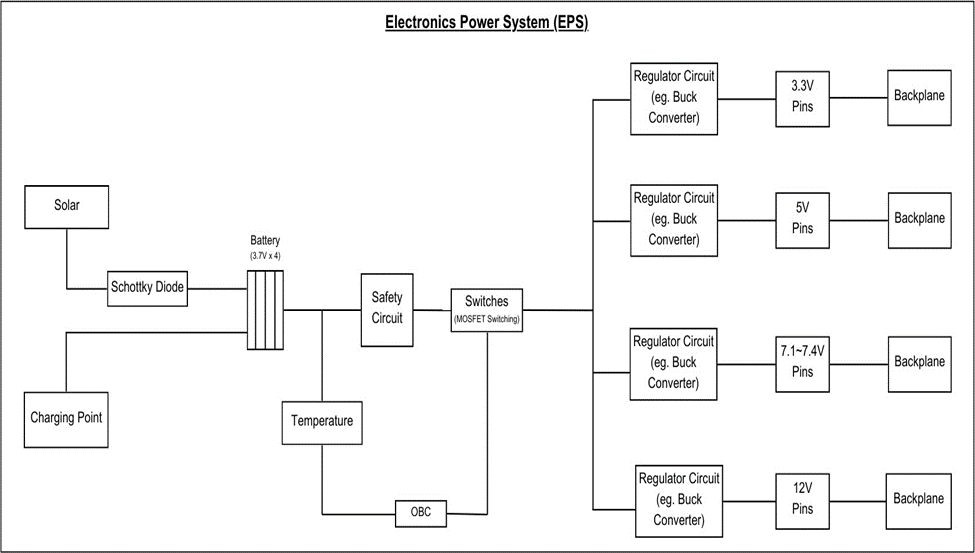
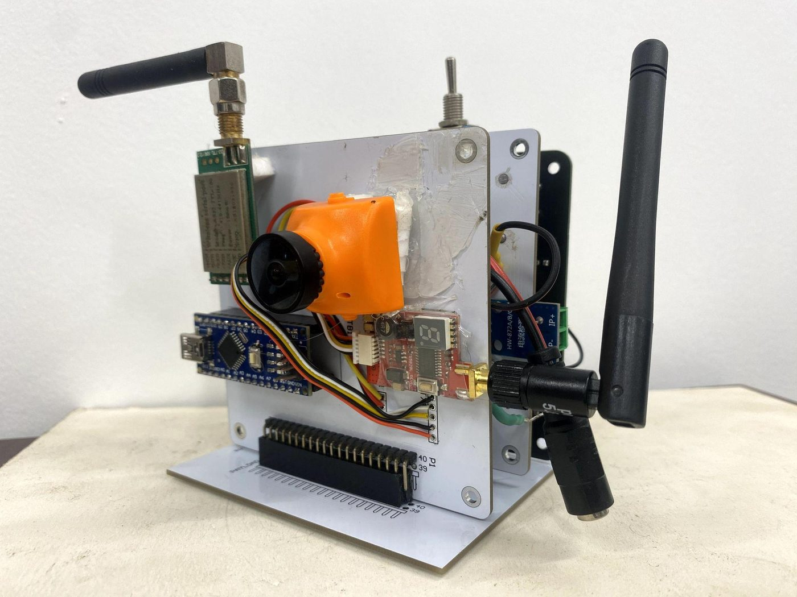
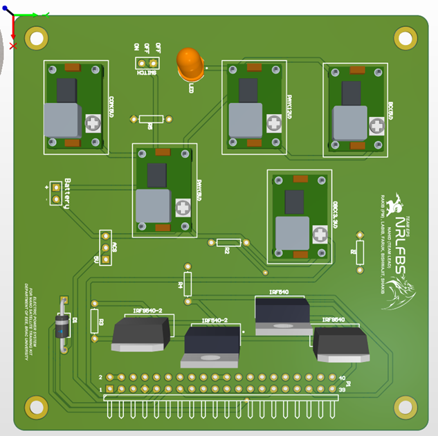
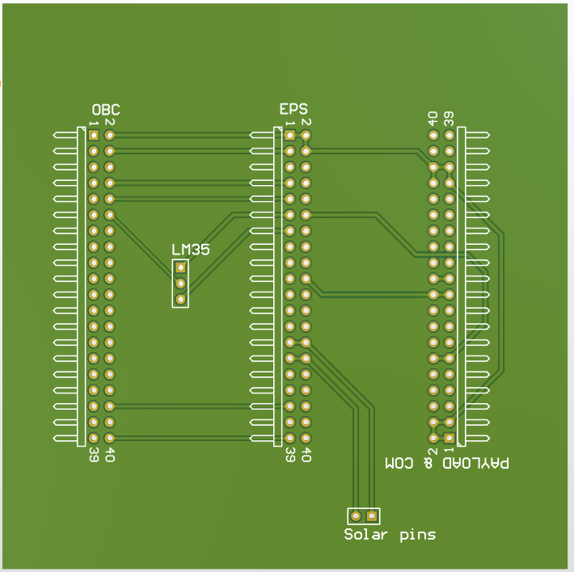
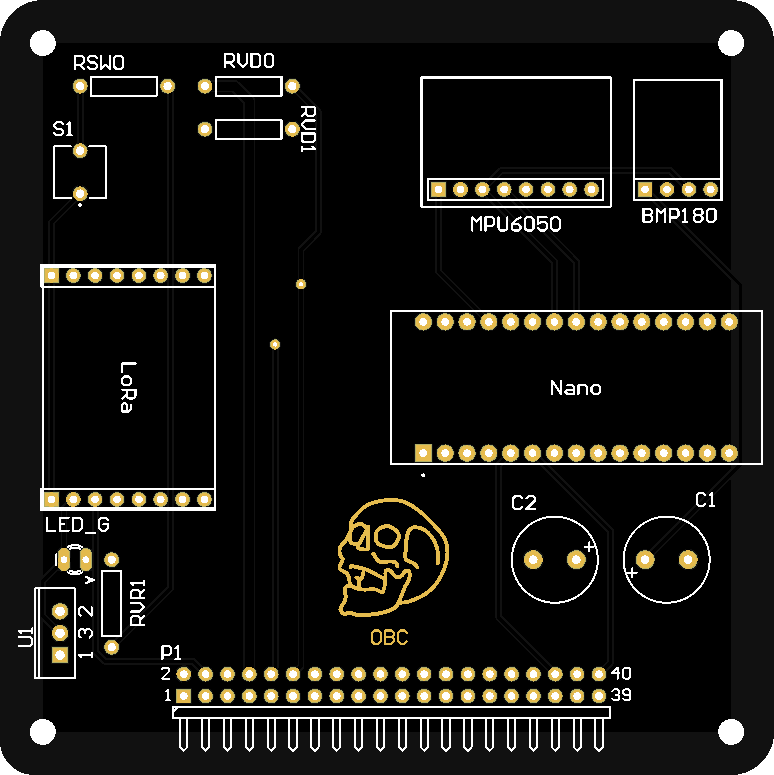
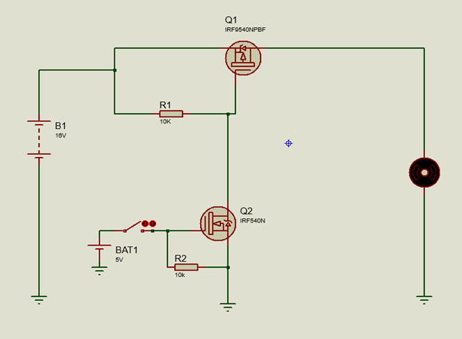
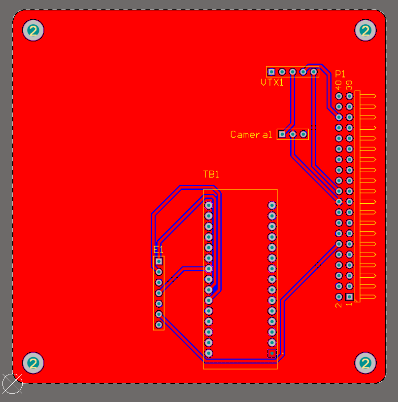

Overview
The kit mirrors the subsystems of a real 1U CubeSat (a 10 × 10 × 10 cm small satellite). It costs around 17,000 BDT including the ground station, and the satellite side costs much less. I led the project and worked across all subsystems: power, onboard computer, payload and communication, base station and backplane.
Problem statement
Bangladesh has strong electrical and computer engineering talent but very little hands-on access to space technology. Educational resources are scarce and imported satellite kits are expensive, so students rarely get to build and test a satellite system themselves.
Engineering objectives
- Establish a radio link with a ground station.
- Send sensor telemetry (temperature, pressure/altitude, acceleration, rotation, battery voltage and current) to the ground station.
- Rebroadcast received packets over a wider area as a digipeater.
- Stream live video from an on-board camera.
- Keep the cost low by using locally available parts.
System architecture
Subsystem boards plug into a 90 × 90 mm two-layer backplane PCB. The EPS supplies regulated power, the OBC reads sensors and sends telemetry over LoRa, the payload streams 5.8 GHz analog video, and the COM board rebroadcasts packets. The base station receives telemetry, digipeater messages and video, and shows them on a laptop.


| Subsystem | Key hardware |
|---|---|
| EPS (power) | 4 × 18650 cells, solar charging, MINI360 buck converters, IRF9540/IRF540 MOSFET high-side switches, Schottky diodes |
| OBC (computer) | Arduino Nano, SX1278 LoRa, MPU6050, BMP180, LM35, ACS712 |
| Payload & COM | FPV camera, TS5828L 5.8 GHz video transmitter, EBYTE E32 1 W LoRa, Arduino Nano |
| Base station | 2 × Arduino Nano, SX1278 and E32 LoRa, SKYDROID 5.8 GHz receiver |
| Backplane | 90 × 90 mm 2-layer PCB, 3 × 2×20 headers, on-board LM35 |
Methodology
- Defined the mission and split the kit into subsystems that match a real CubeSat.
- Designed schematics and PCB layouts for every subsystem in Altium.
- Verified the EPS MOSFET switching circuit in Proteus simulation.
- Wrote OBC firmware for sensor reading, telemetry and ground commands; telemetry was sent as 44-byte LoRa packets.
- Tested the payload video chain from camera to transmitter to receiver.
- Assembled the subsystems on the backplane. In 2026 I reviewed the original schematics line by line, documented the fixes and rewrote the firmware for the corrected hardware.
Hardware and software
Hardware
- Arduino Nano boards
- SX1278 and EBYTE E32 LoRa modules (433 MHz)
- MPU6050, BMP180, LM35, ACS712 sensors
- 4 × 18650 battery pack with solar charging
- FPV camera, 5.8 GHz VTX and receiver
Software & tools
- Altium Designer (schematics and PCBs)
- Arduino C/C++ firmware
- Proteus (EPS switching simulation)
- Python ground-station software
Implementation photographs




Results


Status at the end of the course: schematics and PCB layouts were finished for all subsystems, the EPS switching circuit was verified in simulation, the payload video link was tested successfully, OBC telemetry reading and command handling were demonstrated, and the subsystems were assembled on the backplane. Fabricating the final PCBs and full end-to-end and long-range link tests are the planned next steps.
Performance metrics
Key findings
- A functional satellite training kit can be built from locally available parts at a fraction of the cost of imported kits.
- A design review found pin conflicts, an ADC over-voltage risk and a radio mismatch between the OBC and base station that likely explained earlier LoRa reception issues; each now has a documented fix.
- Future improvements include inter-satellite communication, a multilayer backplane, thermal management and classroom lesson plans.
Links
- GitHub repository (firmware, ground station, schematics, PCB figures, design review and final report)